Advancing EdgeAI: Beyond Basic SLMs
Exploring CoT Prompting, Agents, Function Calling, RAG, and more.
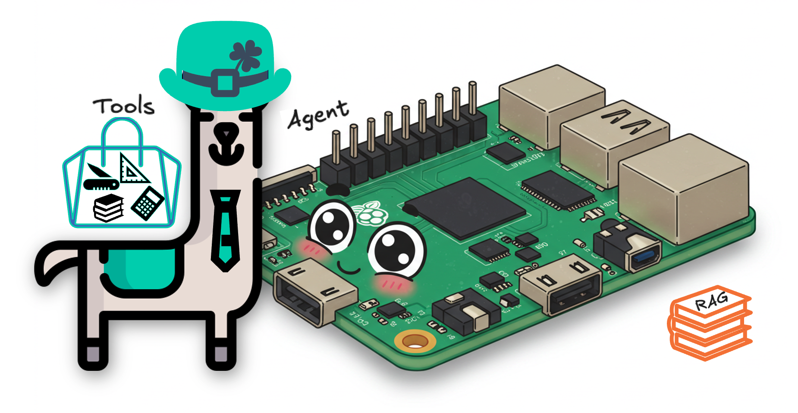
Building on the foundation established in previous chapters of “Edge AI Engineering,” this chapter explores the limitations of Small Language Models (SLMs) and advanced techniques to enhance their capabilities at the edge. While we’ve demonstrated the feasibility of running SLMs on devices like the Raspberry Pi, practical applications often require addressing inherent limitations in these models.
As we explore techniques like chain-of-thought prompting, agent architectures, function calling, response validation, and Retrieval-Augmented Generation (RAG), we’ll see how clever engineering and system design can mitigate SLMs’ limitations.
Understanding SLM Limitations
Small Language Models, while impressive in their ability to run on edge devices, face several key limitations:
1. Knowledge Constraints
SLMs have limited knowledge based on their training data, often outdated and incomplete. Unlike their larger counterparts, they cannot store the vast information needed for comprehensive expertise across all domains.
Let’s run the below example to verify this limitation.
import ollama
response = ollama.generate(
model="llama3.2:1b",
prompt="Who won the 2024 Summer Olympics men's 100m sprint final?"
)
print(response['response'])The output of the previous code will likely show hallucination or admission of not knowing, as in the case below:
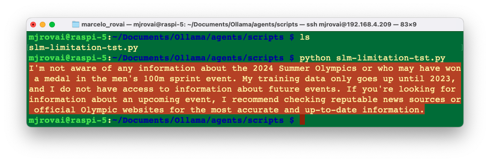
This constraint could be solved simply by having an Agent search the Internet for the answer or using Retrieval-Augmented Generation (RAG), as we will see later.
2. Reasoning Limitations
Complex reasoning tasks often exceed the capabilities of SLMs, which struggle with multi-step logical deductions, mathematical computations, and a nuanced understanding of context. Agents can be used to mitigate such limitations.
For example, let’s reuse the previous code and ask to the SLM to multiply two numbers :
import ollama
response = ollama.generate(
model="llama3.2:3b",
prompt="Multiply 123456 by 123456"
)
print(response['response'])
The response is wrong; once the multiplication result should be 15,241,383,936. This is expected once the language models are not suitable for mathematical computations. Still, we can use an “agent” to determine whether a user asks for multiplication or a general question. We will learn how to create an agent later.
3. Inconsistent Outputs
SLMs may produce inconsistent responses to the same query, making them unreliable for critical applications requiring deterministic outputs. Several enhancements, such as Function Calling and Response Validation, can improve reliability.
4. Domain Specialization
SLMs perform worse than specialized models in domain-specific tasks like visual recognition or time-series analysis. Fine-tuning can adapt models to specific domains or tasks, improving performance for targeted applications.
Techniques for Enhancing SLM at the Edge
Small Language Models (SLMs) offer remarkable capabilities for edge devices, but various techniques can significantly enhance their effectiveness. Here, we present a comprehensive framework for optimizing SLMs on resource-constrained devices like the Raspberry Pi, organized from fundamental to advanced approaches.
We will divide those technics into 3 segments:
Fundamentals: Optimizing Prompting Strategies
Chain-of-Thought Prompting
Few-Shot Learning
Task Decomposition
Intermediate: Building Intelligence Systems
Building Agents with SLMs
General Knowledge Router
Function Calling
Response Validation
Advanced: Extending Knowledge and Specialization
Retrieval-Augmented Generation (RAG)
Fine-Tuning for Domain Specialization
Integration: Combining Techniques for Optimal Performance
The true power of these techniques emerges when they’re strategically combined:
- Agent Architecture with RAG: Create agents that can access both tools and knowledge bases
- Validation-Enhanced RAG: Apply response validation to ensure RAG outputs are accurate
- Fine-Tuned Routers: Use specialized fine-tuned models to handle routing decisions
- Chain-of-Thought with Function Calling: Combine reasoning traces with structured outputs
For example, a comprehensive weather monitoring system, as we introduced in the chapter “Experimenting with SLMs for IoT Control,” might use the following:
- RAG to access historical weather patterns and interpretation guides
- Function calling to structure sensor data analysis
- Response validation to verify recommendations
- Task decomposition to handle complex multi-part weather analysis
Optimizing Prompting Strategies
Chain-of-Thought Prompting
Chain-of-thought prompting encourages SLMs to break down complex problems into step-by-step reasoning, leading to more accurate results:
def solve_math_problem(problem):
prompt = f"""
Problem: {problem}
Let's think about this step by step:
1. First, I'll identify what we're looking for
2. Then, I'll identify the relevant information
3. Next, I'll set up the appropriate equations
4. Finally, I'll solve the problem carefully
Solving:
"""
response = ollama.generate(model="llama3.2:3b", prompt=prompt)
return response['response']This technique significantly improves performance on reasoning tasks by emulating human problem-solving approaches.
Few-Shot Learning
Few-shot learning provides examples within the prompt, helping SLMs understand the expected response format and reasoning pattern:
def classify_sentiment(text):
prompt = f"""
Task: Classify the sentiment of the text as positive, negative, or neutral.
Examples:
Text: "I love this product, it works perfectly!"
Sentiment: positive
Text: "This is the worst experience I've ever had."
Sentiment: negative
Text: "The package arrived on time."
Sentiment: neutral
Text: "{text}"
Sentiment:
"""
response = ollama.generate(model="llama3.2:1b", prompt=prompt)
return response['response'].strip()This approach is particularly effective for classification tasks and standardized outputs.
Task Decomposition
For complex tasks, breaking them into smaller subtasks helps SLMs manage complexity:
def analyze_product_review(review):
# Step 1: Extract main points
points_prompt = f"Extract the main points from this product review: {review}"
points_response = ollama.generate(model="llama3.2:1b", prompt=points_prompt)
main_points = points_response['response']
# Step 2: Determine sentiment
sentiment_prompt = f"Determine the overall sentiment of this review: {review}"
sentiment_response = ollama.generate(model="llama3.2:1b",
prompt=sentiment_prompt)
sentiment = sentiment_response['response']
# Step 3: Identify improvement suggestions
improvements_prompt = f"What suggestions for improvement can be found in \
this review? {review}"
improvements_response = ollama.generate(model="llama3.2:1b",
prompt=improvements_prompt)
improvements = improvements_response['response']
# Final synthesis
final_prompt = f"""
Create a concise analysis of this product review based on:
Main points: {main_points}
Overall sentiment: {sentiment}
Improvement suggestions: {improvements}
"""
final_response = ollama.generate(model="llama3.2:1b",
prompt=final_prompt)
return final_response['response']This technique distributes cognitive load across multiple simpler prompts, enabling SLMs to handle tasks that might otherwise exceed their capabilities.
Building Agents with SLMs
To address some of these limitations, we can develop agents that leverage SLMs as part of a more extensive system with additional capabilities.
What is an Agent? It is an AI model capable of reasoning, planning, and interacting with its environment. It can be called an Agent because it has an agency that can interact with the environment.
Let’s think about the multiplication problem that we faced before. An Agent can be used for that.
An agent is a system that uses an AI Model as its core reasoning engine to:
- Understand natural language: (1) Interpret and respond to human instructions meaningfully.
- Reason and plan: (2) Analyze information, make decisions, and devise problem-solving strategies.
- Interact with its environment: (3 and 4) Gather information, take actions, and observe the results of those actions.
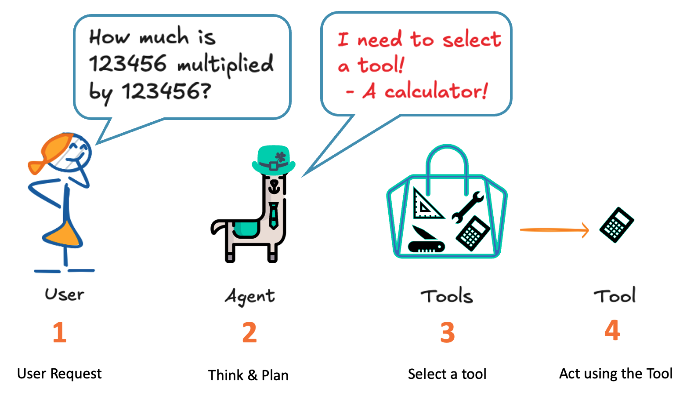
For example, if it is a multiplication, we can use a Python function as a “tool” to calculate it, as shown in the diagram:
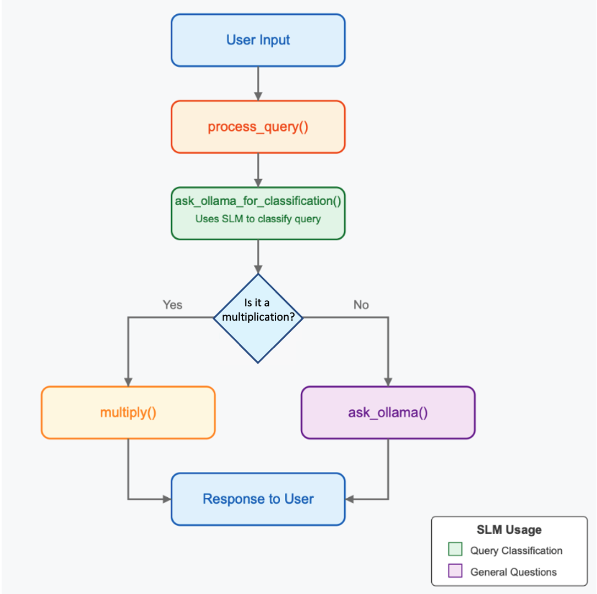
Our code works through the following steps:
User Input: The user types a query like “What is 7 times 8?” or “What is the capital of France?”
Process Query: The
process_query()function handles the input and decides what to do with it.Classification: The
ask_ollama_for_classification()function sends the user’s query to the SLM (using Ollama) with a prompt asking it to classify whether the query is requesting multiplication or asking a general question.Decision: Based on the SLM’s classification:
- If it’s a multiplication request, the SLM also extracts the numbers, and we use our
multiply()function. - If it’s a general question, we send the original query to the SLM for a direct answer.
- If it’s a multiplication request, the SLM also extracts the numbers, and we use our
Response: The system returns either the multiplication result or the SLM’s answer to the general question.
Here’s a Python script that creates a simple agent (or router) between multiplication operations and general questions as described:
import requests
import json
# Configuration
OLLAMA_URL = "http://localhost:11434/api"
MODEL = "llama3.2:3b" # You can change this to any model you have installed
VERBOSE = True
def ask_ollama_for_classification(user_input):
"""
Ask Ollama to classify whether the query is a multiplication request or a \
general question.
"""
classification_prompt = f"""
Analyze the following query and determine if it's asking for multiplication \
or if it's a general question.
Query: "{user_input}"
If it's asking for multiplication, respond with a JSON object in this format:
{{
"type": "multiplication",
"numbers": [number1, number2]
}}
If it's a general question, respond with a JSON object in this format:
{{
"type": "general_question"
}}
Respond ONLY with the JSON object, nothing else.
"""
try:
if VERBOSE:
print(f"Sending classification request to Ollama")
response = requests.post(
f"{OLLAMA_URL}/generate",
json={
"model": MODEL,
"prompt": classification_prompt,
"stream": False
}
)
if response.status_code == 200:
response_text = response.json().get("response", "").strip()
if VERBOSE:
print(f"Classification response: {response_text}")
# Try to parse the JSON response
try:
# Find JSON content if there's any surrounding text
start_index = response_text.find('{')
end_index = response_text.rfind('}') + 1
if start_index >= 0 and end_index > start_index:
json_str = response_text[start_index:end_index]
return json.loads(json_str)
return {"type": "general_question"}
except json.JSONDecodeError:
if VERBOSE:
print(f"Failed to parse JSON: {response_text}")
return {"type": "general_question"}
else:
if VERBOSE:
print(f"Error: Received status code {response.status_code} \
from Ollama.")
return {"type": "general_question"}
except Exception as e:
if VERBOSE:
print(f"Error connecting to Ollama: {str(e)}")
return {"type": "general_question"}
def multiply(a, b):
"""
Perform multiplication and return a formatted response.
"""
result = a * b
return f"The product of {a} and {b} is {result}."
def ask_ollama(query):
"""
Send a query to Ollama for general question answering.
"""
try:
if VERBOSE:
print(f"Sending query to Ollama")
response = requests.post(
f"{OLLAMA_URL}/generate",
json={
"model": MODEL,
"prompt": query,
"stream": False
}
)
if response.status_code == 200:
return response.json().get("response", "")
else:
return f"Error: Received status code {response.status_code} \
from Ollama."
except Exception as e:
return f"Error connecting to Ollama: {str(e)}"
def process_query(user_input):
"""
Process the user input by first asking Ollama to classify it,
then either performing multiplication or sending it back as a
general question.
"""
# Let Ollama classify the query
classification = ask_ollama_for_classification(user_input)
if VERBOSE:
print("Ollama classification:", classification)
if classification.get("type") == "multiplication":
numbers = classification.get("numbers", [0, 0])
if len(numbers) >= 2:
return multiply(numbers[0], numbers[1])
else:
return "I understood you wanted multiplication, but couldn't \
extract the numbers properly."
else:
return ask_ollama(user_input)
def main():
"""
Main function to run the agent interactively.
"""
print("Ollama Agent (Type 'exit' to quit)")
print("-----------------------------------")
while True:
user_input = input("\nYou: ")
if user_input.lower() in ["exit", "quit", "bye"]:
print("Goodbye!")
break
response = process_query(user_input)
print(f"\nAgent: {response}")
# Example usage
if __name__ == "__main__":
# Set to True to see detailed logging
VERBOSE = True
main()When we run the script, we can see that, first, the SLM chooses multiplication, passing the numbers entered by the user to the “tool,” which, in this case, is the multiply() function. As a result, we got 15,241,383,936, which it is correct.
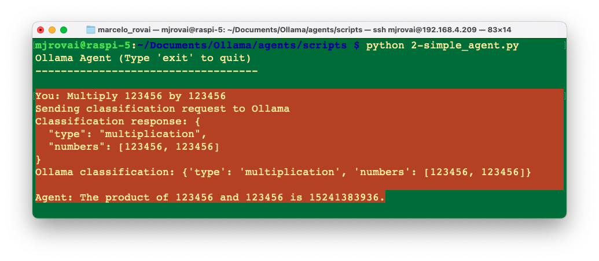
Let’s now enter with another question that has no relation with arithmetic, for example: What is the capital of Brazil? In this case, the SLM will decide that the query is a general question and pass it on to the SLM to answer it.
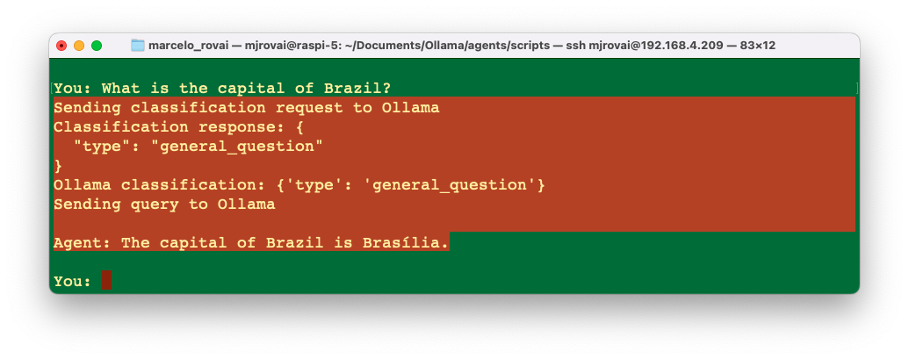
This simple agent (or router) demonstrates the fundamental concept of using an SLM to make decisions about processing different types of user inputs. It shows both the power of SLMs for natural language understanding and their limitations in structured tasks.
Limitations and Considerations
This agent seems to resolve our problem, but it has several limitations that are common when working with SLMs:
- JSON Parsing Issues: SLMs don’t always perfectly format JSON responses as requested. The code includes error handling for this.
- Classification Reliability: The SLM might not always correctly classify the query, especially with ambiguous questions.
- Number Extraction: The SLM might extract numbers incorrectly or miss them entirely.
- Error Handling: Robust error handling is essential when working with SLMs because their outputs can be unpredictable.
- Latency: Significant latency is involved in making multiple calls to the SLM. For example, for the above simple agent, the latency was about
50swhen using thellama3.2:3Bon aRaspberry Pi 5.
Here, you can see the SLM latency (simple query) per device (in tokens/s):
| Model | Raspi 5 (Cortex A-76) | PC (i7) | Mac (M1 Pro) |
|---|---|---|---|
| Gemma3:4b | 3.8 | 8.7 | 39 |
| Llama3.2:3b | 5.5 | 12 | 63 |
| Llama3.2:1b | 7.5 | 19.5 | 111 |
| Gemma3:1b | 12 | 22.45 | 91 |
In my simple tests, the 1B models struggled to classify the tasks correctly. The the 3B and 4B models worked fine
Improvements
To create a more robust agent, we can, for example:
- Expand Capabilities: Add support for more operations (addition, subtraction, division).
- Better Error Handling: Improve fallback mechanisms when the SLM fails to extract numbers or classify correctly.
- Model Preloading: Initialize the model at startup to reduce latency.
- Adding Regex Fallbacks: Use regular expressions as a fallback to extract numbers when the SLM fails.
- Context Preservation: Maintain conversation context for multi-turn interactions.
A more robust script can be used with the above improvements. The diagram shows how it would work:
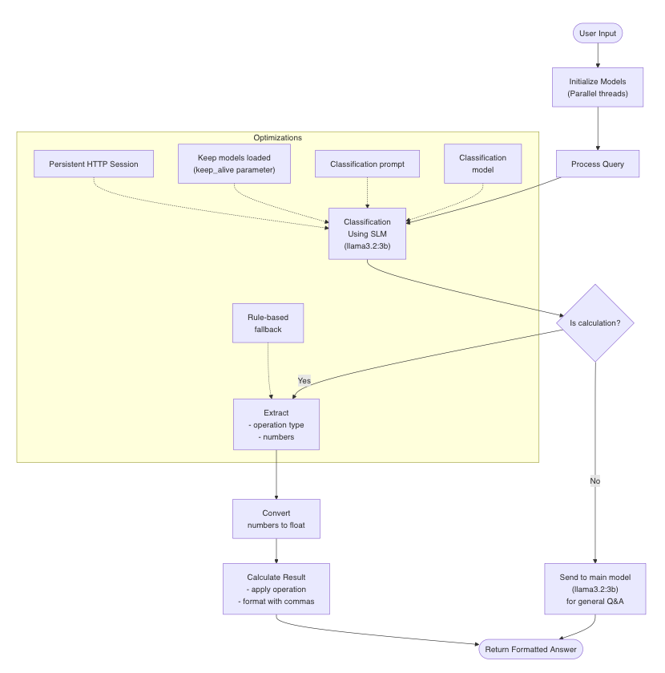
The diagram illustrates the key components of the system:
- Initialization:
- The system starts by initializing both models in parallel threads
- This prevents cold starts and reduces latency
- Query Processing Flow:
- User input is first sent to a classification step
- A model (llama3.2:3B) determines if it’s a calculation or a general question (we can choose a different model here).
- If it’s a calculation:
- The system extracts the operation type and numbers
- Numbers are converted from strings to floats
- The appropriate calculation is performed
- Results are formatted with comma separators (e.g., 1,234,567.89)
- If it’s a general question:
- The query is sent to the main model (llama3.2:3b) for answering (we can choose a different model here)
- Optimizations (highlighted in the subgraph):
- Persistent HTTP session for connection reuse
- Keep-alive parameter to prevent model unloading
- Simplified classification prompt for faster processing
- Using a smaller model for the classification task
- Rule-based fallback logic if the model classification fails
The main performance improvements come from:
- Keeping models loaded in memory
- Using connection pooling
- Simplifying the classification task
- Using a smaller model for classification
- Initializing models in parallel
This approach maintains the intelligent classification capability while significantly reducing execution time compared to the original implementation.
Runing the script 3-ollama-calculator-agent.py, we get correct results with reduced latency of about 60%.
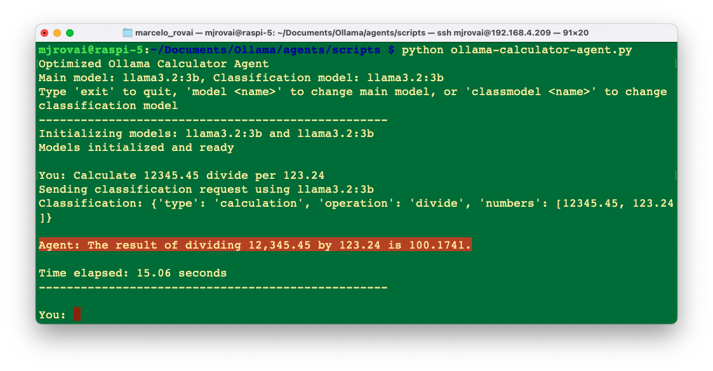
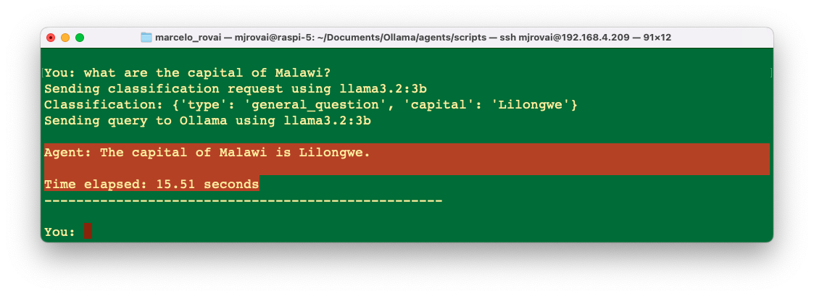
General Knowledge Router
Remember when we asked our SLM: Who won the 2024 Summer Olympics men's 100m sprint final? We could not receive an answer because the modes were trained with information previously in late 2023.
To solve this issue, let’s build a more advanced agent to classify whether it should use its knowledge to answer a question or fetch updated information from the Internet. This addresses a key limitation of Small Language Models: their knowledge cutoff date.
The general architecture of our agent will be similar to the calculator, but now, we will use a web search API as a tool.
This agent addresses a critical limitation of SLMs - their knowledge cutoff date - by determining when to use the model’s built-in knowledge versus when to search for up-to-date information from the web.
How it works:
Uses SLM for Classification: Relies entirely on the SLM to determine whether a query needs web search or can be answered from the model’s knowledge.
Provides Date Context: This section supplies the current date to help the SLM make informed decisions about whether information is outdated.
Integrates Tavily Search: Uses Tavily’s powerful search API to find relevant information for queries that need external data.
Handles Timeouts: Includes fallback mechanisms when the model takes too long to respond.
Maintains Source Attribution: Clearly indicates to the user whether the answer comes from the model’s knowledge or web search.
Let’s run the script: 4-ollama-search-agent.py
But first, we should install the required libraries:
pip install requests
pip install tavily-pythonReplace "tvly-YOUR_API_KEY" with your actual Tavily API key.
Why Tavily is Superior for This Use Case
- Built for RAG: Tavily is specifically designed for retrieval-augmented generation, making it perfect for our knowledge router.
- High-Quality Results: It prioritizes reputable sources and provides context-relevant results.
- Built-in Summarization: The API can provide an AI-generated summary of search results, giving an additional layer of processing before your SLM.
- Simple Integration: Clean API with straightforward responses that are easy to parse.
- Generous Free Tier: 1,000 free searches is plenty for testing and personal use.
Runing the script and entering with the same questions that could not be answered before, we now have: Noah Lyles won the men's 100m sprint final at the 2024 Summer Olympics. He set a new personal best time of 9.79 seconds. This victory marked the United States' first win in the event since 2004.
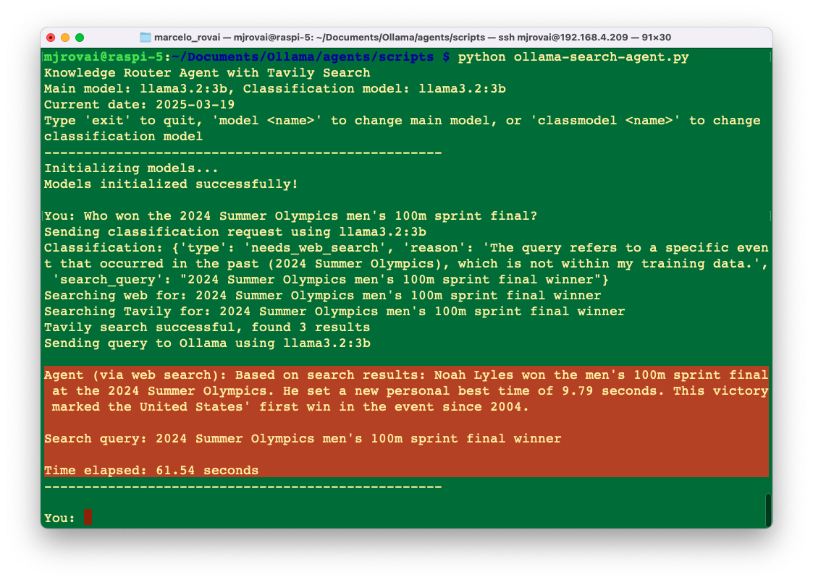
When the user enters a common-knowledge question, the agent will send it directly to the SLM. For example, if the user asks, "Who is Albert Einstein?", we get:
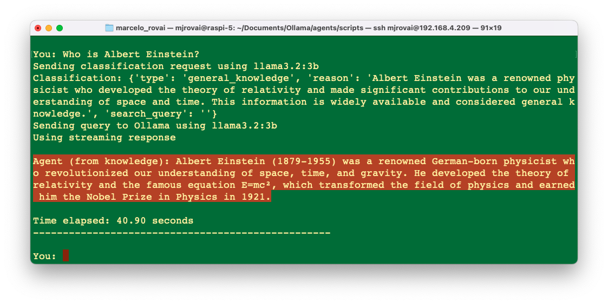
Improving Agent Reliability
There are several ways to enhance an agent’s reliability. One is to implement effective, approved, structured function calling, which makes agents’ responses more consistent and predictable.
1. Function Calling with Pydantic
In the SLM chapter, we explored function calling when we created an app where the user enters a country’s name and gets, as an output, the distance in km from the capital city of such a country and the app’s location.

Once the user enters a country name, the model will return the name of its capital city (as a string) and the latitude and longitude of such city (in float). Using those coordinates, the app used a simple Python library (haversine) to calculate the distance between those 2 points.
The critical library used was Pydantic (and instructor), a robust data validation and settings management library engineered by Python to enhance the robustness and reliability of our codebase. In short, Pydantic helps ensure that the model’s response will always be consistent.
Function calling can improve an agent’s reliability by ensuring structured outputs and clear tool selection logic. Here’s a generic template about how we can implement it :
from pydantic import BaseModel, Field
from typing import Optional, List
import instructor
from openai import OpenAI
class ToolCall(BaseModel):
tool_name: str = Field(..., description="Name of the tool to call")
parameters: dict = Field(..., description="Parameters for the tool")
reasoning: str = Field(..., description="Reasoning for using this tool")
class AgentResponse(BaseModel):
needs_tool: bool = Field(..., description="Whether a tool is needed")
tool_calls: Optional[List[ToolCall]] = Field(None,
description="Tools to call")
direct_response: Optional[str] = Field(None,
description="Direct response if no \
tool needed")
# Set up the client with structured output
client = instructor.patch(
OpenAI(
base_url="http://localhost:11434/v1",
api_key="ollama"
),
mode=instructor.Mode.JSON,
)
def structured_think(query, available_tools, model):
tool_descriptions = "\n".join([f"- {name}: {desc}"
for name, desc in available_tools.items()])
prompt = f"""
Available tools:
{tool_descriptions}
User query: {query}
Determine if any tools are needed to answer this query accurately.
"""
response = client.chat.completions.create(
model=model,
messages=[{"role": "user", "content": prompt}],
response_model=AgentResponse,
max_retries=3
)
return response2. Response Validation
Response validation is crucial to developing and deploying AI agents powered by language models. Here are key points regarding LLM validation for agents: Types of Validation
- Response Relevancy: Determines if the LLM output addresses the input informatively and concisely.
- Prompt Alignment: Check if the LLM output follows instructions from the prompt template.
- Correctness: Assesses factual accuracy based on ground truth.
- Hallucination Detection: Identifies fake or made-up information in LLM outputs.
Adding validation prevents incorrect or harmful responses, and here, we can test it with a simple script:
import ollama
import json
def validate_response(query, response):
"""Validate that the response is appropriate for the query"""
validation_prompt = f"""
User query: {query}
Generated response: {response}
Evaluate if this response:
1. Directly addresses the user's query
2. Is factually accurate to the best of your knowledge
3. Is helpful and complete
Respond in the following JSON format:
{{
"valid": true/false,
"reason": "Explanation if invalid",
"score": 0-10
}}
"""
try:
validation = ollama.generate(
model="llama3.2:3b",
prompt=validation_prompt
)
result = json.loads(validation['response'])
return result
except Exception as e:
print(f"Error during validation: {e}")
return {"valid": False, "reason": "Validation error", "score": 0}
# Test
query = "What is the Raspberry Pi 5?"
response = "It is a pie created with raspberry and cooked in an oven"
validation = validate_response(query, response)
print(validation)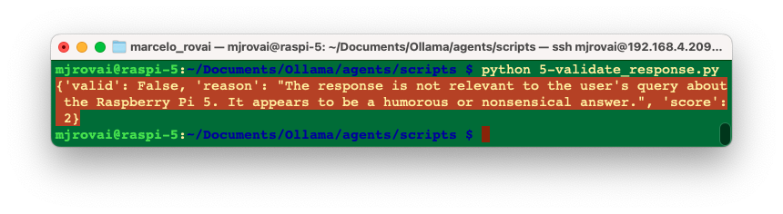
Retrieval-Augmented Generation (RAG)
RAG systems enhance Small Language Models (SLMs) by providing relevant information from external sources before generation. This is particularly valuable for edge devices with limited model sizes, as it allows them to access knowledge beyond their training data without increasing the model size.
Understanding RAG
In a basic interaction between a user and a language model, the user asks a question, which is sent as a prompt to the model. The model generates a response based solely on its pre-trained knowledge. In a RAG process, there’s an additional step between the user’s question and the model’s response. The user’s question triggers a retrieval process from a knowledge base.

The RAG process consists of these key steps:
- Query Processing: When a user asks a question, the system converts it into an embedding (a numerical representation).
- Document Retrieval: The system searches a knowledge base for documents with similar embeddings.
- Context Enhancement: Relevant documents are retrieved and combined with the original query.
- Generation: The SLM generates a response using both the query and the retrieved context.
Implementing a Basic RAG System
We will develop two crucial components (scripts) of an RAG system:
- Creating the Vector Database (
10-Create-Persistent-Vector-Database.py). This script builds a knowledge base by:- Loading documents from PDFs and URLs
- Splitting them into manageable chunks
- Creating embeddings for each chunk
- Storing these embeddings in a vector database (Chroma)
- Querying the Database (
20-Query-the-Persistent-RAG-Database.py). This script:- Loads the saved vector database
- Accepts user queries
- Retrieves relevant documents based on query similarity
- Combines documents with the query in a prompt
- Generates a response using the SLM
Let’s examine how these components work together to implement a RAG system on edge devices.
Key Components of Our Edge RAG System
- Document Processing
def create_vectorstore():
# Load documents from PDFs and URLs
docs_list = []
# [Document loading code]
# Split documents into chunks
text_splitter = RecursiveCharacterTextSplitter.from_tiktoken_encoder(
chunk_size=300, chunk_overlap=30
)
doc_splits = text_splitter.split_documents(docs_list)
# Create embeddings and store in vector database
embedding_function = OllamaEmbeddings(model="nomic-embed-text")
vectorstore = Chroma.from_documents(
documents=doc_splits,
collection_name="rag-edgeai-eng-chroma",
embedding=embedding_function,
persist_directory=PERSIST_DIRECTORY
)
# Persist to disk
vectorstore.persist()This function processes our documents, creating a searchable knowledge base. Notice we’re using OllamaEmbeddingswith the nomic-embed-text model, which can run efficiently on edge devices like the Raspberry Pi.
- Query Processing and Retrieval
def answer_question(question, retriever):
# Retrieve relevant documents
docs = retriever.invoke(question)
docs_content = "\n\n".join(doc.page_content for doc in docs)
# Generate answer using RAG prompt
rag_prompt = hub.pull("rlm/rag-prompt")
rag_chain = rag_prompt | llm | StrOutputParser()
# Generate the answer
answer = rag_chain.invoke({"context": docs_content, "question": question})
return answerThis function retrieves relevant documents based on the query and combines them with a specialized RAG prompt to generate a response. The RAG prompt is particularly important as it tells the model how to use the context documents to answer the question.
- SLM Integration
# Initialize the LLM
local_llm = "llama3.2:3b"
llm = ChatOllama(model=local_llm, temperature=0)We’re using Ollama to run the SLM locally on our edge device, in this case using the 3B parameter version of Llama 3.2.
Advantages of RAG for Edge AI
Using RAG on edge devices offers several significant advantages:
- Knowledge Extension: RAG allows small models to access knowledge beyond their training data, effectively extending their capabilities without increasing model size.
- Reduced Hallucination: By providing factual context, RAG significantly reduces the likelihood of SLMs generating incorrect information.
- Up-to-date Information: Unlike the fixed knowledge in a model’s weights, RAG knowledge bases can be updated regularly with new information.
- Domain Specialization: RAG can make general SLMs perform like domain specialists by providing domain-specific knowledge bases.
- Resource Efficiency: RAG allows smaller models (which require less memory and computation) to achieve performance comparable to much larger models.
Optimizing RAG for Edge Devices
When implementing RAG on resource-constrained edge devices like the Raspberry Pi, consider these optimizations:
- Chunk Size: Smaller chunks (300-500 tokens) reduce memory usage during retrieval and generation.
- Retrieval Limits: Limit the number of retrieved documents (k=3 to 5) to reduce context size.
- Embedding Model Selection: Choose lightweight embedding models like
nomic-embed-text(137M parameters) orall-minilm(23M parameters). - Persistent Storage: As shown in our examples, using persistent storage prevents recomputing embeddings every time that the RAG system is initiated.
- Query Optimization: Implement query preprocessing to improve retrieval accuracy while reducing computational load.
def optimize_query(query):
"""Optimize the query for better retrieval results"""
# Remove filler words, focus on key terms
stop_words = {"and", "or", "the", "a", "an", "in", "on", "at", "to",
"for", "with"}
terms = [term for term in query.lower().split() if term not in stop_words]
return " ".join(terms)Application: Enhanced Weather Station with RAG
Building on our advanced weather station (see the chapter “Experimenting with SLMs for IoT Control”), we can, for example, integrate RAG to provide more contextual responses about weather conditions and historical patterns:
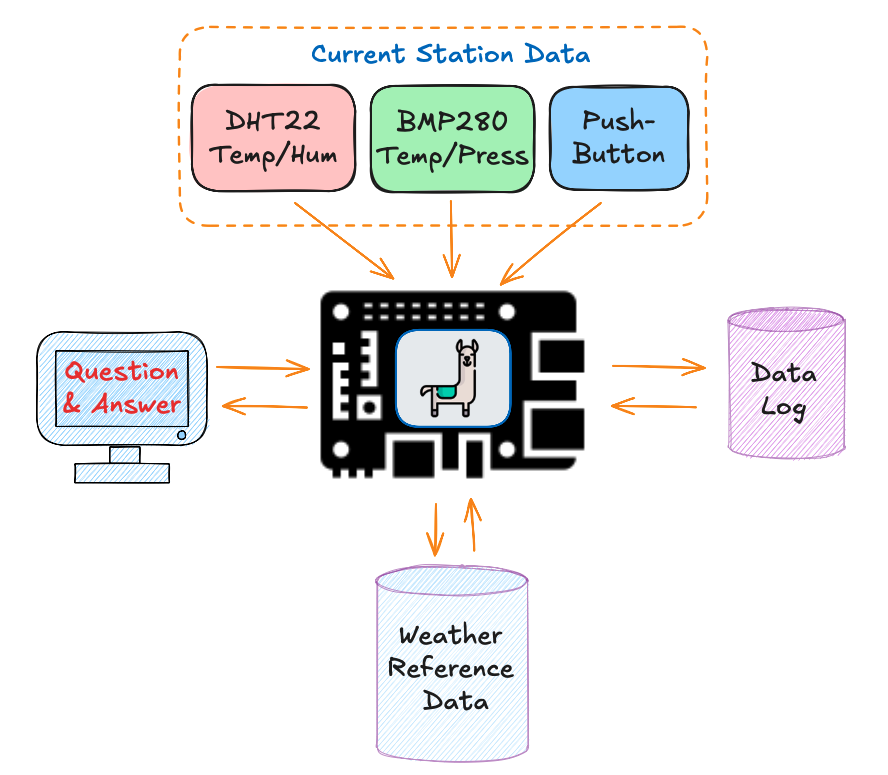
def weather_station_with_rag(retriever, model="llama3.2:3b"):
# Get current sensor readings
temp_dht, humidity, temp_bmp, pressure, button_state = collect_data()
# Formulate a query for the RAG system based on current readings
query = f"Analysis of temperature {temp_dht}°C, humidity {humidity}%, \
and pressure {pressure}hPa"
# Retrieve relevant context
docs = retriever.invoke(query)
context = "\n\n".join(doc.page_content for doc in docs)
# Create a prompt that combines current readings with retrieved context
prompt = f"""
Current Weather Station Data:
- Temperature (DHT22): {temp_dht:.1f}°C
- Humidity: {humidity:.1f}%
- Pressure: {pressure:.2f}hPa
Reference Information:
{context}
Based on current readings and the reference information, provide:
1. An analysis of current weather conditions
2. What these conditions typically indicate
3. Recommendations for any actions needed
"""
# Generate response using SLM
llm = ChatOllama(model=model, temperature=0)
response = llm.invoke(prompt)
return response.contentThis function enhances our weather station by providing context-aware responses incorporating current sensor readings and relevant information from our knowledge base. This is only an example. To use it, we should have “Weather Reference Data,” which we do not currently have. Instead, let’s create a general RAG system specializing in Edge AI Engineering.
Using the RAG System for Edge AI Engineering
For our RAG system, we will create a database with all chapters alheady written for the EdgeAI Engineering book (chapters as URLs) and a PDF Wevolver 2025 Edge AI Technology Report.
# PDF documents to include
pdf_paths = ["./data/2025_Edge_AI_Technology_Report.pdf"]
# Define URLs for document sources
urls = [
"https://mjrovai.github.io/EdgeML_Made_Ease_ebook/raspi\
/object_detection/object_detection.html",
"https://mjrovai.github.io/EdgeML_Made_Ease_ebook/raspi/image_classification\
/image_classification.html",
"https://mjrovai.github.io/EdgeML_Made_Ease_ebook/raspi/setup/setup.html",
"https://mjrovai.github.io/EdgeML_Made_Ease_ebook/raspi/counting_objects_yolo\
/counting_objects_yolo.html",
"https://mjrovai.github.io/EdgeML_Made_Ease_ebook/raspi/llm/llm.html",
"https://mjrovai.github.io/EdgeML_Made_Ease_ebook/raspi/vlm/vlm.html",
"https://mjrovai.github.io/EdgeML_Made_Ease_ebook/raspi/physical_comp\
/RPi_Physical_Computing.html",
"https://mjrovai.github.io/EdgeML_Made_Ease_ebook/raspi/iot/slm_iot.html",
]Using the RAG system is straightforward. First, ensure you’ve created the vector database:
# Run once to create the database
python 10-Create-Persistent-Vector-Database.py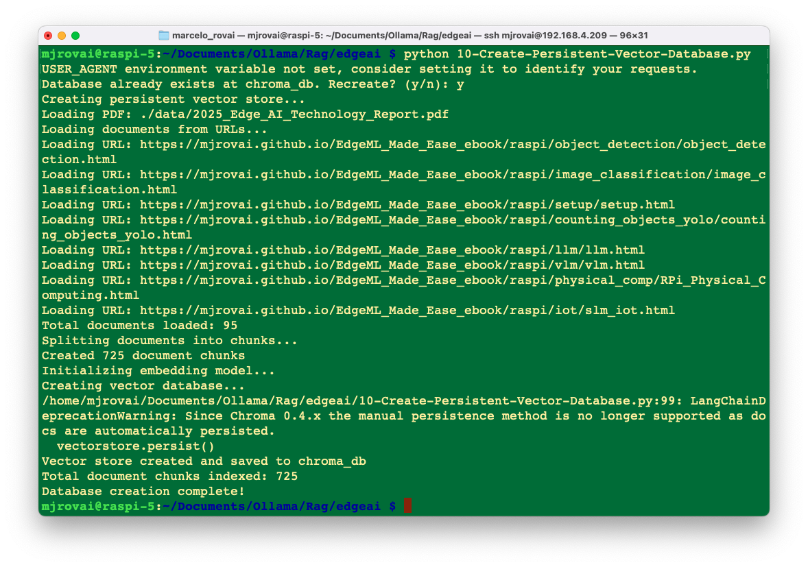
Then, interact with the system through queries:
# Start the interactive query interface
python 20-Query-the-Persistent-RAG-Database.pyExample interactions:
Your question: What is edge AI?
Generating answer...
Question: what is EdgeAI?
Retrieving documents...
Retrieved 4 document chunks
Generating answer...
Response latency: 165.72 seconds using model: llama3.2:3b
ANSWER:
==================================================
EdgeAI refers to the application of artificial intelligence (AI) at the edge
of a network, typically in real-time applications such as IoT sensors, industrial
robots, and smart cameras. The Edge AI ecosystem includes edge devices, edge
servers, and cloud platforms that work together to enable low-latency AI
inferencing and processing of data on-site without relying on continuous cloud connectivity. Edge AI technologies aim to solve the world's biggest challenges
in AI by leveraging energy-efficient, affordable, and scalable solutions for machine
learning and advanced edge computing.
==================================================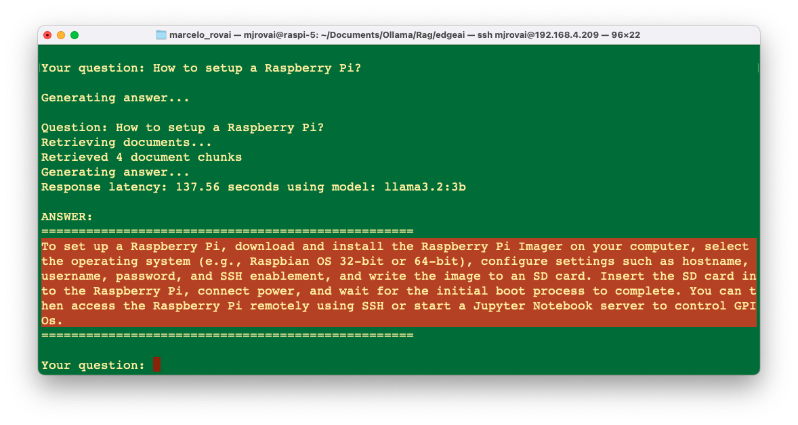
Those responses demonstrate how RAG enhances the SLM’s response with specific information from our knowledge base about Edge AI applications on Raspberry Pi. One issue that should be addressed is the latency.
To reduce latency, we can use for embedding, the all-minilm model which is much smaller (23M parameters vs. 137M for nomic-embed-text) and creates 384-dimensional embeddings instead of 768, significantly reducing computation time.
Also, smaller chunks can be helpful but have some disadvantages. For example, let’s say that we can use a small chunk size (100 tokens with 50 overlap). Here are some considerations:
Advantages
- Memory Efficiency: Smaller chunks require less memory during retrieval and processing, which is beneficial for resource-constrained devices like the Raspberry Pi.
- More Granular Retrieval: Smaller chunks can potentially provide more precise matches to specific questions, especially for targeted queries about very specific details.
- Reduced Context Window Usage: SLMs have limited context windows; smaller chunks allow you to include more distinct pieces of information while staying within these limits.
Disadvantages
- Loss of Context: 100 tokens is approximately 75-80 words, which is often insufficient to capture complete concepts or explanations. Many paragraphs and technical descriptions require more space to convey their full meaning.
- Increased Vector Store Size: More chunks mean more embeddings to store, potentially increasing the overall size of your vector database.
- Fragmented Information: With such small chunks, related information will be split across multiple chunks, making it harder for the model to synthesize coherent answers.
Testing Different Models and Chunk Sizes
A good practice would be to experiment with different chunk sizes and embedding models and measure:
- Retrieval Quality: Are the retrieved chunks relevant to our queries?
- Answer Accuracy: Does the SLM generate correct and comprehensive answers?
- Memory Usage: Is the system staying within the memory constraints of our device?
- Response Time: How does chunk size affect latency?
We can create a simple benchmarking function to have one embedding model defined test the best chunk size:
def benchmark_chunk_sizes(document_list,
query_list,
sizes=[(100, 50), (300, 30), (500, 50), (1000, 100)]):
"""Test different chunk sizes and measure performance"""
results = {}
for chunk_size, overlap in sizes:
print(f"Testing chunk_size={chunk_size}, overlap={overlap}")
# Create splitter with current settings
text_splitter = RecursiveCharacterTextSplitter.from_tiktoken_encoder(
chunk_size=chunk_size, chunk_overlap=overlap
)
# Split documents
start_time = time.time()
doc_splits = text_splitter.split_documents(document_list)
split_time = time.time() - start_time
# Create embeddings and store
embedding_function = OllamaEmbeddings(model="nomic-embed-text")
temp_db_path = f"temp_db_{chunk_size}_{overlap}"
start_time = time.time()
vectorstore = Chroma.from_documents(
documents=doc_splits,
collection_name="benchmark",
embedding=embedding_function,
persist_directory=temp_db_path
)
db_time = time.time() - start_time
# Create retriever
retriever = vectorstore.as_retriever(k=3)
# Test queries
query_times = []
for query in query_list:
start_time = time.time()
docs = retriever.invoke(query)
query_time = time.time() - start_time
query_times.append(query_time)
# Store results
results[(chunk_size, overlap)] = {
"num_chunks": len(doc_splits),
"splitting_time": split_time,
"db_creation_time": db_time,
"avg_query_time": sum(query_times) / len(query_times),
"max_query_time": max(query_times),
"min_query_time": min(query_times)
}
# Clean up temporary DB
shutil.rmtree(temp_db_path)
return resultsRegarding the query side, some optimations can also reduce the latency at the edge. Let’s modify the previous script, with:
- Direct Ollama API Calls: Bypasses the LangChain abstraction layer for embedding and LLM generation to reduce overhead.
- Embedding Caching: Uses
lru_cacheto prevent recalculating embeddings for repeated queries. - Preloading Models: Initializes models at startup to avoid cold-start latency.
- Optimized Retriever Settings: Uses minimal k-value (2) and adds a score threshold to filter out irrelevant matches.
- Reduced Dependency Usage: Removes unnecessary imports and simplifies the pipeline.
- Concurrent Processing: Uses ThreadPoolExecutor for batch document embedding (when needed).
- Early Termination: Checks for empty document results before running the LLM.
- Simplified Prompt: Uses a more concise prompt template focused on getting direct answers.
- Fixed Seed: Uses a consistent seed for the LLM to reduce variability in response times.
This optimized version (25-optimized_RAG_query.py) significantly reduces the latency compared to our original implementation while maintaining compatibility with our existing nomic-embed-text vector database and chunk size (300/30).
The direct Ollama API approach removes several layers of abstraction in the LangChain implementations.
We can see latency improvements from 2 minutes down to approximately 50-110 seconds, depending on the complexity of the queries.
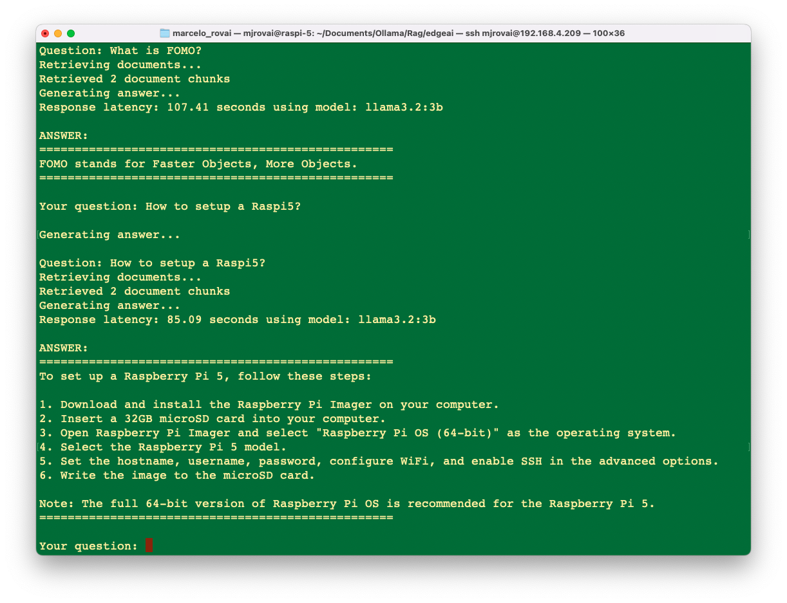
In the next section, we’ll explore how RAG can be combined with our agent architecture to create even more powerful edge AI systems.
Advanced Agentic RAG System
We can significantly enhance traditional RAG implementations by incorporating some of the modules discussed earlier, such as intelligent routing, validation feedback loops, and explicit knowledge gap identification. This will provide more reliable and transparent answers for users querying document-based knowledge bases.
For example, let’s enhance the last RAG system created on the Edge AI Engineering dataset so that the agent can use tools, such as a calculator for arithmetic calculations.
Note that any tool could be used here; the calculator is only a simple example to demonstrate the concept.
When the user asks a question, the system first determines if it needs to use a tool or the RAG approach. For knowledge queries, the RAG system enhances the response with information from the database. The system then validates the answer quality, and if it’s not sufficient, tries again with an improved prompt. In cases where questions fall outside the database’s scope, the system will clearly inform the user rather than attempting to generate potentially misleading answers.
System Architecture
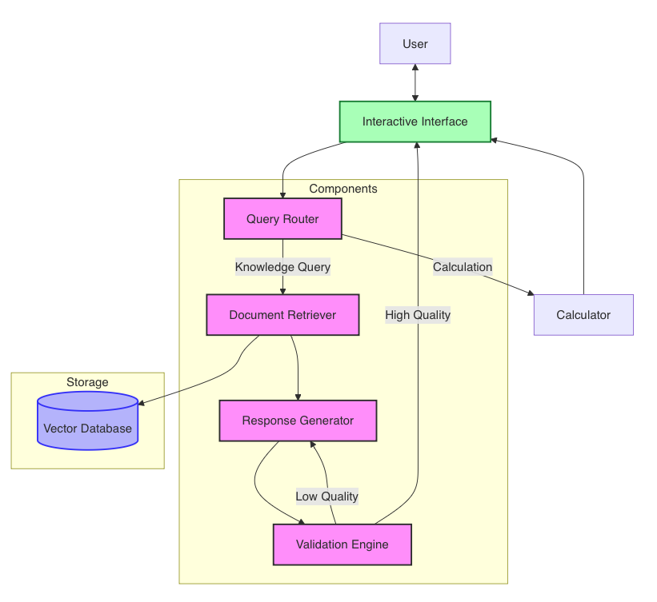
The system functions through several key components:
- Query Router
- Analyzes incoming queries to determine if they’re calculations or knowledge queries
- Can use the same model for the response generator or a lightweight model to reduce overhead
- Implements rule-based fallbacks for robust classification
- Document Retriever
- Connects to a persistent vector database (Chroma)
- Uses semantic embeddings to find relevant documents
- Returns contextually similar content for knowledge generation
- Response Generator
- Creates answers based on retrieved documents
- Implements a two-stage approach with validation and improvement
- Adds appropriate disclaimers when information is insufficient
- Validation Engine
- Evaluates answer quality using structured criteria
- Assigns a numerical score to each generated response
- Triggers enhancement processes when quality is insufficient
- Interactive Interface
- Provides user-friendly interaction with clear quality indicators
- Supports model switching and verbosity control
- Offers guidance for improving query outcomes
Key Workflow
The system follows this high-level workflow:
- User submits a query
- Router determines the query type (calculation vs. knowledge)
- For calculations:
- Extract operation and numbers
- Compute and return result
- For knowledge queries:
- Retrieve relevant documents
- Generate initial answer with RAG
- Validate response quality
- If quality is low, attempt enhancement with improved prompt
- If still insufficient, add disclaimer about knowledge gaps
- Return final answer with quality metrics
Important Code Sections
Query Routing
def route_query(query: str) -> Dict[str, Any]:
"""Determine if the query is a calculation, otherwise use RAG"""
if VERBOSE:
print(f"Routing query: {query}")
# Check for calculation keywords
calc_terms = ["+", "add", "plus", "sum", "-", "subtract", "minus",
"difference", "*", "×", "multiply", "times", "product",
"/", "÷", "divide",
"division", "quotient"]
# Simple rule-based detection for calculations
is_calc = any(term in query.lower() for term in calc_terms) and \
re.search(r'\d+', query)
if is_calc:
# Use smaller, faster model for operation and number extraction
# ...extraction logic here...
return route_info
# For everything else, use RAG
return {"type": "rag", "reasoning": "Non-calculation query, using RAG"}Enhanced RAG with Feedback Loop
# First RAG attempt with standard prompt
answer = get_answer_with_rag(query, documents, llm)
processing_type = "rag_standard"
# Validate the response quality
validation = validate_response(llm, query, answer)
validation_score = validation.get("score", 5)
# If validation score is low, try again with enhanced prompt
if validation_score < 7:
if VERBOSE:
print(f"First RAG attempt validation score: {validation_score}/10. \
Trying enhanced prompt.")
# Second RAG attempt with enhanced prompt
enhanced_context = "\n\n".join(documents)
enhanced_prompt = f"""
I need a more detailed and accurate answer to the following question:
{query}
The previous answer wasn't satisfactory. Let me provide you with \
relevant information:
{enhanced_context}
Based strictly on this information, provide a comprehensive answer.
Focus specifically on addressing the user's question with precise \
information from the provided context.
If the information doesn't fully answer the question, clearly state \
what you can determine
from the available information and what remains unknown.
"""
# ... process enhanced response ...Knowledge Gap Handling
# If still low quality after enhancement, add a note
if improved_score < 6:
processing_type = "rag_insufficient_info"
information_gap_note = (
"\n\nNote: The information in my knowledge base may be incomplete on this"
"topic. I've provided the best answer based on available information, but"
"there might be gaps or additional details that would provide a more "
"complete answer."
)
answer = answer + information_gap_noteDetailed Workflow Diagram
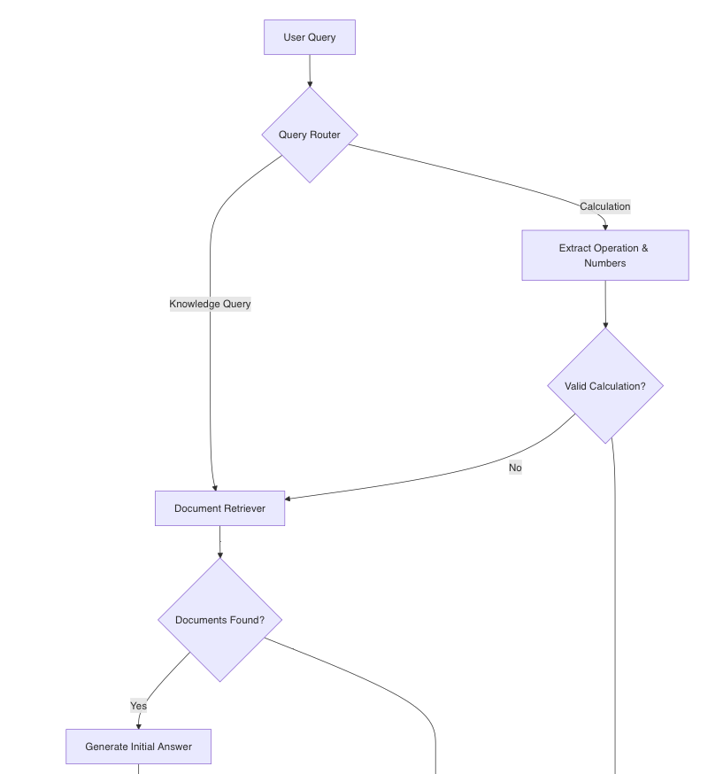
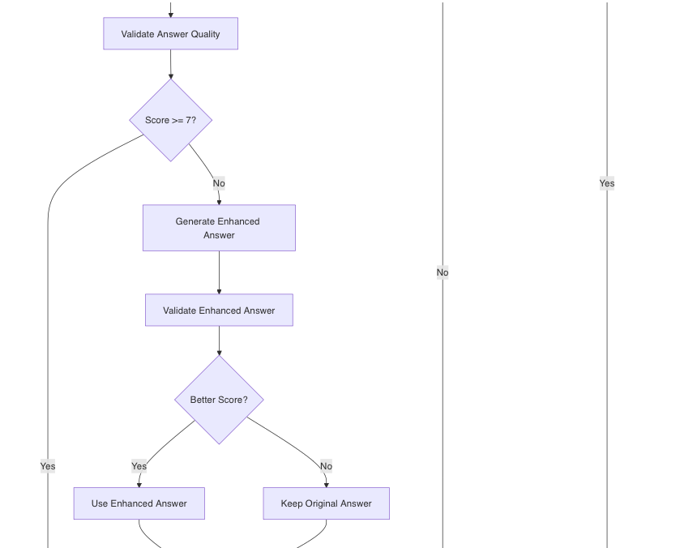
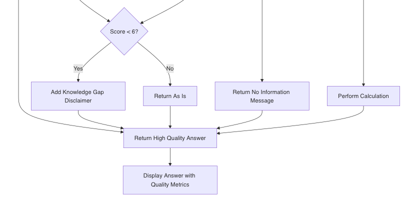
Examples
Run the script 30-advanced_agentic_rag.py:
Simple Calculation
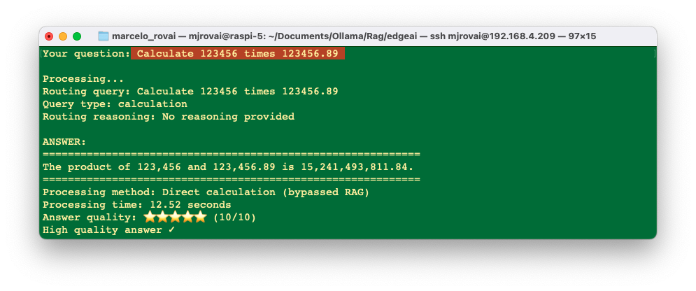
First Pass Rag
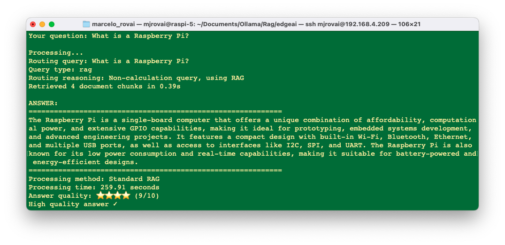
More Complex Queries
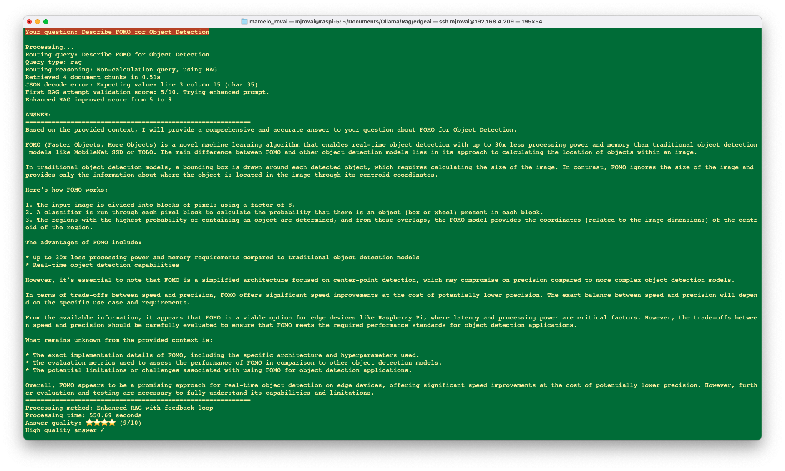
Queries outside of the database scope:
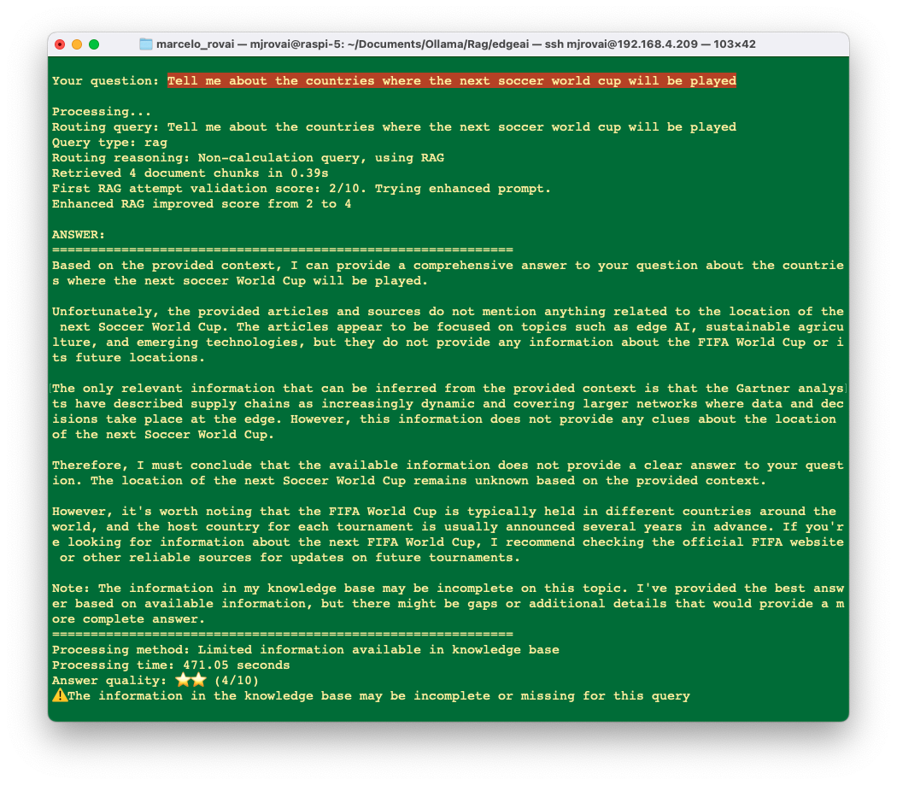
Fine-Tuning SLMs for Edge Deployment
Fine-tuning can adapt models to specific domains or tasks, improving performance for targeted applications.
Preparing for Fine-Tuning
# Example dataset for fine-tuning a weather response model
training_data = [
{"input": "What's the weather in London?",
"output": "I need to check London's current weather. Please use the \
weather tool."},
{"input": "Is it going to rain tomorrow in Paris?",
"output": "To answer about tomorrow's weather in Paris, \
I need to use the weather tool."},
{"input": "Will it be sunny this weekend in Tokyo?",
"output": "To predict Tokyo's weekend weather, \
I should use the weather tool."}
]
# Format data for fine-tuning
formatted_data = []
for item in training_data:
formatted_data.append({
"prompt": item["input"],
"response": item["output"]
})
# Save formatted data to a file
import json
with open("weather_finetune_data.json", "w") as f:
json.dump(formatted_data, f)Setting Up a Fine-Tuning Process
Fine-tuning on edge devices is typically impractical due to resource constraints. Instead, fine-tune on a more powerful machine and deploy the result to the edge:
This is a conceptual example - actual implementation depends on the framework
def prepare_for_finetuning(data_path, output_path):
"""
Prepare a model for fine-tuning
(run this on a more powerful machine)
"""
# This is a conceptual example
print(f"Fine-tuning model using data from {data_path}")
print(f"Fine-tuned model will be saved to {output_path}")
# The process would typically involve:
# 1. Loading the base model
# 2. Loading and preprocessing the training data
# 3. Setting up training parameters (learning rate, epochs, etc.)
# 4. Running the fine-tuning process
# 5. Evaluating the fine-tuned model
# 6. Saving and optimizing for edge deployment
# For Ollama, we would create a custom model definition (Modelfile)
modelfile = f"""
FROM llama3.2:1b
# Fine-tuning settings would go here
PARAMETER temperature 0.7
PARAMETER top_p 0.9
PARAMETER top_k 40
# Custom system prompt for the specific domain
SYSTEM You are a specialized assistant for weather-related questions.
"""
with open(output_path, "w") as f:
f.write(modelfile)
print("Model preparation complete. Next steps:")
print("1. Run fine-tuning on a powerful machine")
print("2. Optimize the resulting model for edge deployment")
print("3. Deploy to your Raspberry Pi")Real implementation: Supervised Fine-Tuning (SFT)
Supervised fine tuning (SFT) is a method to improve and customize pre-trained LLMs. It involves retraining base models on a smaller dataset of instructions and answers. The main goal is to transform a basic model that predicts text into an assistant that can follow instructions and answer questions. SFT can also enhance the model’s overall performance, add new knowledge, or adapt it to specific tasks and domains
Before considering SFT, it is recommended to try prompt engineering techniques like few-shot prompting or retrieval augmented generation (RAG), as discussed previously. In practice, these methods can solve many problems without fine-tuning. If this approach doesn’t meet our objectives (regarding quality, cost, latency, etc.), then SFT becomes a viable option when instruction data is available. SFT also offers benefits like additional control and customizability to create personalized LLMs.
However, SFT has limitations. It works best when leveraging knowledge already present in the base model. Learning completely new information, like an unknown language, can be challenging and lead to more frequent hallucinations. For new domains unknown to the base model, it is recommended that it be continuously pre-trained on a raw dataset first.
On the opposite end of the spectrum, instruct models (i.e., already fine-tuned models) can be very close to our requirements. By providing chosen and rejected samples for a small set of instructions (between 100 and 1000 samples), we can force the LLM to behave as we need.
The easiest way to finetune an SLM is by using Unsloth. The three most popular SFT techniques are full fine-tuning, LoRA, and QLoRA.
For details, see: Fine-tune Llama 3.1 Ultra-Efficiently with Unsloth.
For example, using this link, it is possible to find several notebooks with the steps to finetune SLMs—for instance, the Gemma 3:1B.
The fine-tuned model can be saved on HF Hub or locally as GGUF, and to run a GGUF model locally, we can use Ollama, as shown below:
Download the finetuned GGUF model
Create a Modelfile in the home directory:
cd ~
nano Modelfile- In the Modelfile, specify the path to the GGUF file:
FROM ~/Downloads/your-model-name.gguf
PARAMETER temperature 1.0
PARAMETER top_p 0.95
PARAMETER top_k 64Save the Modelfile and exit the editor.
Create the loadable model in Ollama:
ollama create your-model-name -f ModelfileThe model name here can be anything.
- We can now use the model through as we have done with the llama3.2:3B in this chapter..
Conclusion
This chapter has explored comprehensive strategies for overcoming the inherent limitations of Small Language Models in edge computing environments. By implementing techniques ranging from optimized prompting strategies to sophisticated agent architectures and knowledge integration systems, we’ve demonstrated that it’s possible to significantly enhance the capabilities of edge AI systems without requiring more powerful hardware or cloud connectivity.
The techniques presented—chain-of-thought prompting, task decomposition, function calling, response validation, and RAG—form a toolkit that edge AI engineers can apply individually or in combination to address specific challenges. Each approach offers unique advantages: prompting techniques improve reasoning capabilities with minimal overhead, agent architectures enable SLMs to perform actions beyond text generation, and RAG systems dramatically expand an SLM’s knowledge without increasing model size.
Our practical implementations on the Raspberry Pi showcase that these enhancements are not merely theoretical but can be deployed in real-world edge scenarios. From the simple calculator agent to the more sophisticated knowledge router and RAG-enabled question answering system, these examples provide templates that developers can adapt to their specific application requirements.
The true power of these techniques emerges when they’re strategically combined. An agent architecture with RAG capabilities, enhanced by chain-of-thought reasoning and validated with a feedback loop, creates an edge AI system that approaches the capabilities of much larger models while maintaining the advantages of edge deployment—privacy preservation, reduced latency, and operation without internet connectivity.
As edge AI continues to evolve, these techniques will become increasingly important in bridging the gap between the limited resources available on edge devices and the growing expectations for AI capabilities. By thoughtfully applying these approaches, developers can create intelligent systems that process data locally, respect user privacy, and operate reliably in diverse environments.
The future of edge AI lies not necessarily in deploying ever-larger models but in developing more innovative systems that combine efficient models with intelligent architectures, contextual knowledge integration, and robust validation mechanisms. By mastering these techniques, edge AI practitioners can create solutions that are not just technologically impressive but genuinely useful and trustworthy in addressing real-world challenges.
Resources
The scripts used in this chapter can be found here: Advancing EdgeAI Scripts